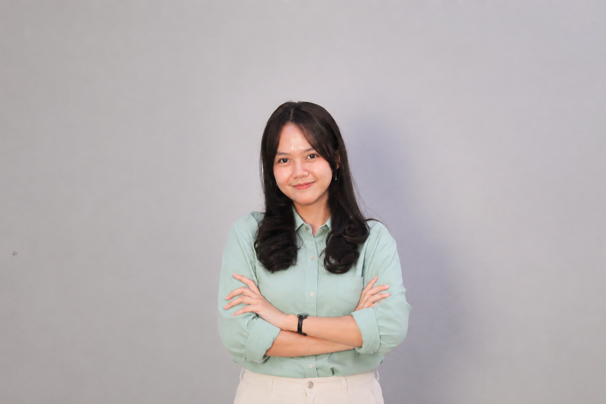

Saya adalah mahasiswi Universitas Sebelas April. Saya menjembatani kesenjangan antara desain visual kreatif dan implementasi front-end dengan kualitas terbaik. Filosofi saya berpusat pada kesederhanaan, kemudahan penggunaan, dan warna-warna pastel yang menyenangkan. Baik dalam membangun identitas merek yang konsisten maupun memprogram fitur dasbor yang kompleks, saya selalu memperhatikan detail animasi dan interaksi mikro agar website terasa responsif dan hidup.
Membuat transisi yang mulus
Komponen bersih & modular
Gaya visual yang khas
Riwayat singkat perjalanan profesional dan kontribusi saya di berbagai bidang proyek.
Bertanggung jawab dalam merancang dashboard pesanan barista yang kompleks, mengimplementasikan manajemen status, mengintegrasikan penyimpanan lokal, dan mengoptimalkan kecepatan rendering.
Merancang antarmuka e-commerce di Figma dan mengembangkan halaman arahan interaktif menggunakan HTML/CSS vanilla.
Memprogram dashboard admin backend, mengintegrasikan migrasi database SQLite, serta membangun alur pengaduan konsumen yang bersih.